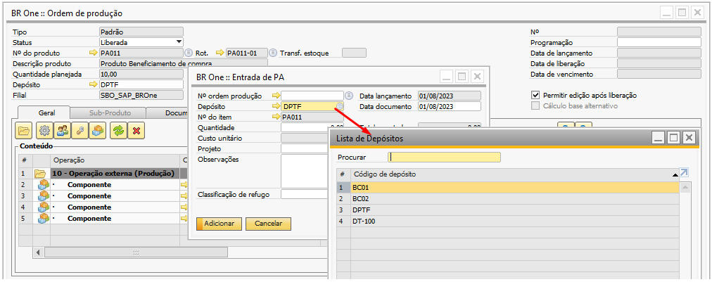
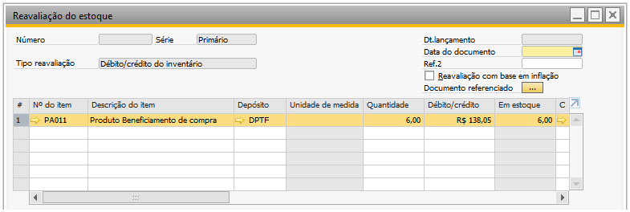
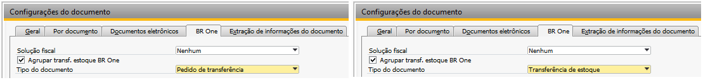
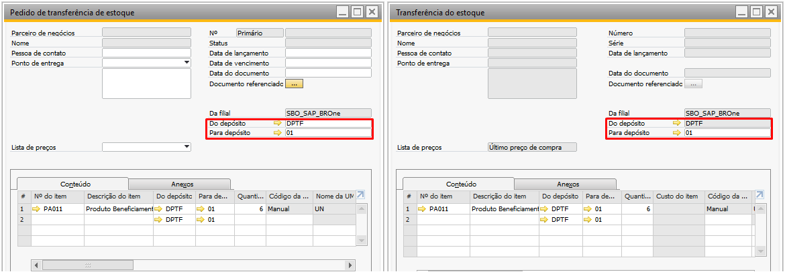
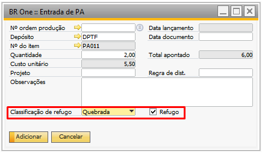
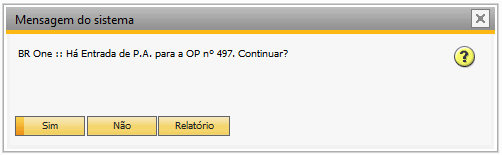
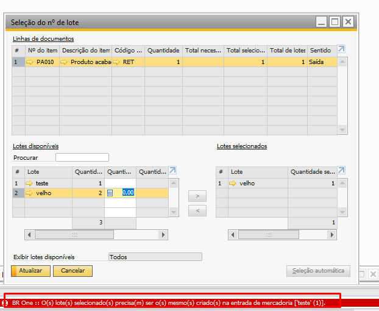

Entrada de produto acabado
Após todo processo de retorno é necessário realizar o apontamento de Entrada de Produto Acabado.
Para acessar essa tela pode utilizar as opções:
Através do menu Produção -> Entrada de produto acabado;
Através do Terminal de Apontamentos;
Através do botão direito na Ordem de Produção liberada.
{kind=link}
Ao abrir a tela de BR One :: Entrada de produto acabado deve ser preenchido os campos do cabeçalho, o campo depósito já vem preenchido com o depósito padrão do fornecedor, mas é permitido alterá-lo.
{kind=link}
Na entrada de Produto acabado, gera LCM:
Crédito: Conta de material em processo (WIP)
Débito: Conta de estoque
E gera uma reavaliação de estoque referente ao valor do rateio de custo de terceiro:
{kind=link}
Na reavaliação de estoque, gera LCM:
Crédito: Outras Despesas Operacionais
Débito: Conta de estoque
Ao adicionar entrada de PA será validado o parâmetro Gerar transferência de estoque por DI da tela BR One :: configurações de beneficiamento. Caso esteja marcado o sistema irá gerar a transferência de estoque automaticamente por DI, e caso esteja desmarcado o sistema irá abrir a tela de do Pedido de transferência de estoque/Transferência de estoque para o usuário validar e adicionar.
 {kind=link}
{kind=link}
Transferência de estoque, gera LCM:
Crédito: Conta de estoque
Débito: Conta de estoque
Entrada de produto acabado refugado
Para entrada de produto acabado de peças refugadas, será feita apenas a baixa dos componentes por Explosão.
 {kind=link}
{kind=link}
Entrada de PA
Ao realizar a Entrada de PA e, em seguida, realizar uma transferência do estoque, apenas o lote criado na entrada de mercadoria da ordem de produção (OP) seja permitido na transferência do estoque, mesmo que tenha outros lotes disponíveis no depósito de terceiros.
OBS: Na OP. de retrabalho tem essa validação
Caso selecione um lote que seja não da entrada de mercadoria da OP. em questão, deve ocorrer o erro e apresentar a mensagem conforme print:
